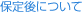

指定自立支援医療機関（育成医療・更生医療） 顎口腔機能診断医療機関



矯正治療によって歯並び、噛（か）み合せが改善した後は、後戻りを防ぐ治療「保定処置」に入ります。いわゆる「歯がため」の期間で、矯正前の歯列の状態に戻るのを防止し、歯並びを長く維持する処置です。また、矯正治療が終了した後も、親知らずが生えてきて、歯並びが崩れたり、虫歯や歯周病による影響で噛み合わせや歯並びに変化が起こる可能性があります。
保定期間は、個人によっても治療の難易度によっても異なりますが、平均して約2年以上が必要で、年に数回の割合の通院となります。
このあとで、患者さんから「これで終了ですか？」と言われることが多くあります。実はこれで終了ではなく、歯並びを維持するためのアフターケアが大切なのです。6ヶ月または、1年に1回程度の定期検診がお勧めです。虫歯や歯周病のチェックとフッ素塗布などの予防処置や、新たな不正咬合（こうごう）の、原因の除去を行います。
さらに、人は年をとると、加齢による歯並びの変化も生じます。人間の歯は噛み合わせや、ほお、舌の筋肉のバランスの良いところに収まっています。年齢の変化などでバランスが変われば、それにより歯は動く可能性があります。そこで定期検診を行うことにより、末永く歯の健康を維持することができます。
当院では、15年以上定期検診を継続して受け、美しい歯並びを保っている人が大勢います。当院を、「ホームドクター」として、活用してください。
自分の歯で一生を過ごすことは、とても大切なことです。
一般歯科では、よく「8020運動」といって、80歳になっても20本以上の歯を残そうという活動が行われています。その上で、きれいな歯並びを維持することが、より良い健康の助けになるのです。